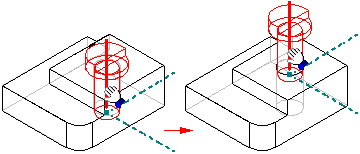

Drag Component command
Use the Drag Component command to translate or rotate parts in an assembly. The part being moved must be grounded or not fully positioned. You can use this command to do the following:
-
Reposition parts dynamically along the x, y, or z axis.
-
Analyze physical motion in mechanisms.
-
Detect collisions between parts.
Any relationships applied to the part will prevent movement along the axis whose position is controlled by a relationship. A part will move only in an underconstrained direction. You can use the Suppress command on the shortcut menu to temporarily suppress one or more assembly relationships to allow the part to move.
You can only select grounded parts and subassemblies when the Locate Grounded Components option on the Analysis Options dialog box is set.
After you select the part you want to move, you can use the options on the command bar to specify the type of movement you want. For example, you can click the Move button, then position the cursor over one of the principal axes and drag the part to a new position.
You can restart the command by right-clicking.

Patterned parts do not participate in collision detection or motion analysis.
When you use the Drag Component command to move an adjustable part, the assembly relationships positioning the adjustable part are temporarily suppressed. When you complete a move cycle, the relationships are reapplied. If the movement you define conflicts with the adjustable part's relationship structure, the adjustable part is returned to its original position or a position that is consistent with the relationship structure.
In order for the Drag Component command to work, all broken assembly relationships must be repaired or deleted.
How do I
Move a part in an assemblyMove multiple parts in an assembly
Check for interference between parts in an assembly
Learn more
Analyzing movement and detecting collisions in assembliesMoving and mirroring rules for assembly bodies
Checking interference on parts
Look up more details
Move Components commandMove Components command bar
Move Options dialog box
Steering Wheel
Check Interference command
Drag Component command bar
Analysis Options dialog box
Check Interference command bar
Report page (Interference Options dialog box)
Interference Options dialog box
Options page (Interference Options dialog box)